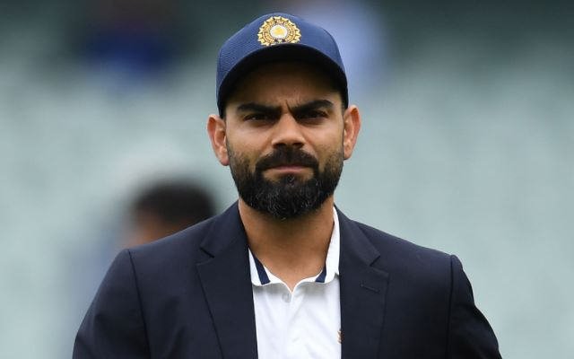
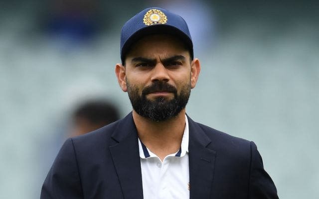

Virat Kohli captained India Under-19s to victory at the 2008 Under-19 World Cup in Malaysia.
After a few months later, he made his ODI debut for India against Sri Lanka at the age of 19. Initially having played as a reserve batsman in the Indian team, he soon established himself as a regular in the ODI middle-order and was part of the squad that won the 2011 World Cup. He made his Test debut in 2011 and shrugged off the tag of "ODI specialist" by 2013 with Test hundreds in Australia and South Africa.
[4] Having reached the number one spot in the ICC rankings for ODI batsmen for the first time in 2013,[5] Kohli also found success in the Twenty20 format, winning the Man of the Tournament twice at the ICC World Twenty20 (in 2014 and 2016).